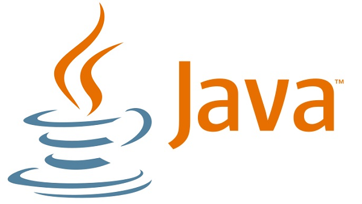

Leela Krishna Vasista Gutta
"Make it work, make it right, make it fast!"
Software Developer
Mail me at: vasista.gutta@gmail.com
About
Hi there,Welcome to my personal website.I currently live in Dekalb,IL.At present I am pursuing my masters degree in computer science from Northern Illinois University. I am working as Graduate Research Student at Illinois interactive Report Card ,Dekalb. I am very passionate to learn new technologies.I love to accept challenges.Ready to take exciting oppurtunities that helps to achieve my goal.
Summary
- About 2.5 years of experience in Development of Java/J2EE applications, enterprise-wide deployments, data modeling, database design, Testing and maintenance , Web & Client-Server application development and design using Object Oriented Programming, Java and J2EE technologies
- Hands-on experience on developing a web application from scratch using HTML, CSS, JavaScript, jQuery,JAVA following MVC architecture with MySQL database.
- Extensive experience in working with Spring Boot, Spring framework, Struts framework, Hibernate, JPA , MVC , Micro Services architecture.
- Experience in using Web/Application servers like IBM WebSphere(5.0/6.0/7.2), Glassfish and Tomcat.
- Experience in writing ANT, Maven build scripts, providing logging facility using Log4j and Writing ATTD & JUnit test cases.
- Experienced in Jeniks and CICD Pipeline deployment.
- Configured and used JIRA for bug tracking and functional testing.
- Extensive experience of working with customers, offshore / onsite teams model.
- Extensive development experience using Core Java API’s like Collections, Exception Handling, Multi-threading.
- Developed Web Service implementation for cross-platform clients to access the applications using SOAP and REST.
- Creating micro services and deploying to Pivotal Cloud Foundry (PCF).
- Experience on using Version control system – RTC, SVN, Git.
- Practical understanding of Multi-Tier Architectures, Object Oriented Concepts and its usage in coding and implementation with creative and innovative thinking skills.
- Well-developed ability for client interaction, requirement gathering also in the technical design, debugging and user documentation.
Experience
Graduate Research Assistant, Illinois Interactive Report Card, Northern Illinois University, Dekalb.
- Working as a Application Developer on a web application for Student data project and IPP project at Illinois Interactive Report Card.
- Involved in developing functionality of system that satisfies client needs.
- Gaining experience in .net MVC, JavaScript, JQuery, D3 Framework, AngularJS.
System Engineer for Citi Bank Project, Tata Consultancy Service Ltd, Chennai, India.
- Worked as a developer in CRS project (Citi Retail Servicing Platform), where I developed Micro Services using NextGen Architecture and Netflix OS Components like Gem fire, Ribbon, Histrix, Eureka, and Zuul. The developed micro service used in proactive and Reactive chat application.
- Responsible for development of single page web-application using Restful web services/Micro Services, for Citi Bank Retail Partners.
- Participating in Agile ceremonies includes Release Planning, Sprint Planning, Demos and Retrospectives.
- Involved in the code promotion process of the application in each phase (QA, UAT, and Production).
- Developed and shipped multiple user stories in less than 70% of the allotted time, saving financial resources.
- Took the responsibility of changing a Legacy Application Architecture to NextGen Architecture(Micro Service) and hosted remotely on Pivotal Cloud Foundry.
- Used J2EE, Spring Boot Framework, Html, Css, JavaScript, Struts Framework, Junit, Selenium Automation.
Assitant System Engineer for Lloyds Bank Project, Tata Consultancy Service Ltd, Chennai, India.
- Worked as a developer in Digital Banking project, where I developed single page web-application using SOAP/Restful web services for Lloyds bank partners.
- Involved in code review meetings,performed optimization to make it effective.Implemented logging using log4j.Used IBM Web Sphere Application Server.
- Responsible for developing automation test scripts for web pages using selenium framework.
- Involved in trouble shooting for QA and Production cycle.
- Used J2EE, My SQL, Oracle, Junit, Mockito, Restful Web services
Skills
| 1 | Programming Languages | : | C,C++,Java,C#,Python,Android. |
| 2 | Web Technologies | : | HTML, CSS, Javascript, Php, Angular JS, BootStrap, JQuery, AJAX. |
| 3 | Web FrameWork | : | J2EE–Rest Web Services, Micro Services, JSP, Struts, Spring, Junit, SpringBoot, Selenium. |
| 4 | Database | : | MySQL, SQLite, Oracle, Mongo DB, JDBC, SQL Server, AWS S3. |
| 5 | Operating System | : | Windows, Linux, Mac. |
| 6 | IDE | : | Eclipse, Intellij IDEA, JIRA, Github, Android Studios, Eclipse, NetBeans, Visual Studio, STS, Pivotal Cloud Foundry, SoapUI, Splunk, Putty, WinScp, Tectia. |
| 7 | Application Server | : | Tomcat 7.0, Web Sphere Application Server, IIS server. |
| 8 | Version Controller | : | GIT, SVN, RTC. |
Education
Master's in Computer Science
Northern Illinois university
Jan 2018 - Dec 2019

Bachelor's in Computer Science
Amrita University
Aug 2011 - May 2015
Certifications

Oracle Certified Java SE Programmer
May 2016
AWS Certified Developer - Associate
July 2019

Cisco Certified Network Associate
May 2013
Copyright © Leela Krishna Vasista 2019
MOI PHYSIOTHERAPY
- Designed and Developed an Internal API Web application that helps to maintain information for a small physical therapy clinic.
- It allows users to book appointments,stores patient information and exercises for a clinic.
- Worked with PHP engine to communicate with MySQL database server.WampServer is used to create web applications with Apache2, PHP and a MySQL database. It will also provide the MySQL administrative tool PhpMyAdmin to easily manage your databases using a web browser.
PHP
Visual Studio
MySQL
APACHE SERVER
WAMPSERVER
HTML
Javascript
AJAX
JQuery
CSS
Bootstrap
FeedBackSystem

- Designed and deployed online web application that lets students to give feedback about their university professors who teach the courses.
- It allows users to securely login and post their questions regarding CSS or HTML ,JavaScript .
- And also it provides an interface for professors to see their complete rating on the respective courses
- MySQL is used for maintaining the database of feedback ratings and Java MVC (JSP and Servlets) is used as server side programming along with HTML and CSS for styling of Webpages
Java
MySQL
Servlets
Oracle
Tomcat
JSP
CSS
Javascript
HTML
JQuery
Ajax
Bootstrap
CardLess ATM Transaction

- CardLess Transaction will be useful for all the customers who hold debit card and use the same for any mode of transaction that use physical card transaction.
- This feature can mainly be opted by ICICI customers who have mobile application installed.
- We propose Card Less Transaction for more secure and easy transaction for ICICI customers by using their ICICI android app which can be used in all ATMs for authentication and handshake purposes.
- Using Cardless Transaction App, customers will be able to with draw from ATM without inserting the card or keying in any authentication details and hence reducing the risk due to physical card and also enhancing the user experience in current ATM transaction process.
- QR code is used to create handshake between mobile App and ATM.
- Also, offers and promotions can be added to card image to increase the reach of on going offers.
MicroServices
Android SDK
PhoneGap
IBM Bluemix Cloud
CSS3
JavaScript
HTML
JQuery
SpringBoot
Java
Bootstrap